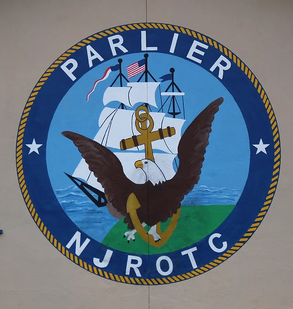

Parlier High School
Naval Junior Reserve Officers Training Corps

Parlier NJROTC painted emblem
About the NJROTC

Cheif Killian & Former Cadet Mendoza
Air Rifle Championship 2020
Run by retired navy personel, the Parlier High School Navy Junior Reserve Training Corps or NJROTC
established in 1995 molds our students into better ciztizens for the future.
The NJROTC program helps Cadets with
leadership, management, responsibility, discipline, physical training, confidence,
exposing them to real world circumstances.
The NJROTC program helps Cadets with leadership, management, responsibility, discipline, physical training, confidence, and exposes them to real world circumstances.
This program is open to both male and female students.
Cadets begin learning self-discipline with basic drill such as position of attention, parade rest and marching.
Cadets have many opportunities to be involved through teams such as our Academic, Air Rifle, Color Guard, and Drill Teams.
Cadets also have an opportunity to be part of the Unit Staff and are able to promote in rank by completing the advance requirements.
Our Unit is active in our local community through various activities to include parades, service projects and providing held during many of our community's activities.
We strive to make both our campus and our community a better place.
 Parlier NJROTC

Parlier NJROTC
